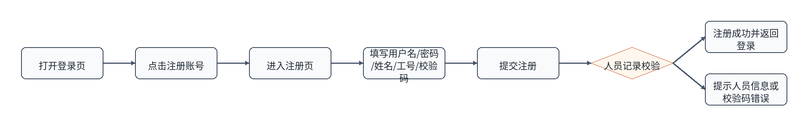
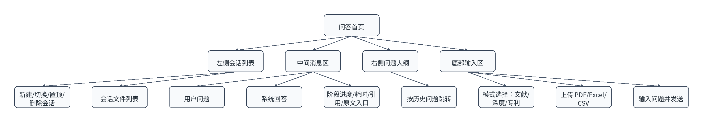
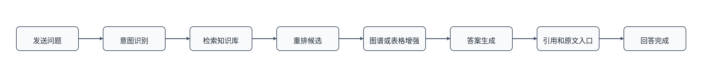
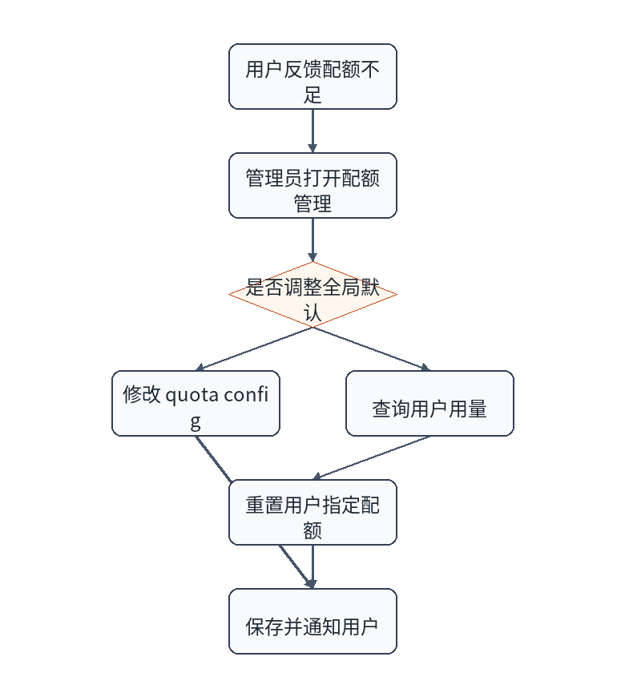

| 版本 | 日期 | 修订人 | 修订说明 |
|---|---|---|---|
| V1.0 | 2026/05/20 | 项目组 | 初版 |
本文档面向 LiFeO4Agent 最终用户和管理员，说明如何注册、登录、使用问答功能、上传文件、查看原文、管理用户和处理常见问题。本文档不要求用户了解 Docker、MinIO、Neo4j 或部署细节。
在浏览器访问系统地址，进入登录页后点击“注册账号”。

admin 开头。注册成功后，用户账号处于可登录状态，部门信息由人员记录自动带出。注册失败时，页面会提示用户名重复、人员信息不匹配、校验码错误或密码不符合要求。
首次登录时，系统可能要求修改密码、设置安全问题或补全人员信息。用户应按页面提示进入个人中心完成设置，完成后才能正常使用全部功能。
| 功能 | 入口 | 操作说明 |
|---|---|---|
| 修改用户名 | 个人中心 | 输入新用户名并保存。 |
| 修改密码 | 个人中心 | 输入旧密码和新密码。 |
| 设置安全问题 | 个人中心 | 设置用于找回密码的问题和答案。 |
| 绑定人员信息 | 个人中心 | 输入工号、姓名和校验码。 |

| 区域 | 作用 |
|---|---|
| 会话列表 | 新建、切换、置顶或删除会话。 |
| 文件列表 | 查看本会话上传文件，选择本轮问答使用哪些文件。 |
| 消息区 | 查看问题、回答、阶段、引用和错误提示。 |
| 问题大纲 | 长对话中快速跳转到历史问题。 |
| 输入区 | 选择问答模式、上传文件并发送问题。 |
在首页底部模式选择中点击“文献”。
系统返回结构化回答，并展示引用文献。用户可点击引用或原文入口核对 PDF。
在首页底部模式选择中点击“深度”。
深度问答适合复杂分析、技术路线比较、原因归纳和方案建议。该模式通常比文献模式耗时更长。
在首页底部模式选择中点击“专利”。
系统返回专利相关回答，并可提供专利原文、结构化表格或图谱增强信息。
系统会结合选中的文件回答问题。若没有勾选文件，则系统按普通知识库问答处理。
/admin。管理员可维护一级、二级、三级部门。系统初始包含“电池材料技术研究中心”及其下属部门。
管理员维护工号、姓名、校验码和部门。普通用户注册或绑定人员信息时，会使用这些记录进行校验。
管理员可配置普通问答、文件问答、查看原文和文档辅助配额。当用户配额不足时，页面会提示用户联系管理员。
| 问题 | 处理方法 |
|---|---|
| 登录失败怎么办？ | 检查用户名和密码；若账号停用或忘记密码，请联系管理员。 |
| 注册提示人员信息不匹配？ | 联系管理员确认工号、姓名和校验码是否正确。 |
| 为什么登录后跳到个人中心？ | 说明需要完成首次登录设置、修改密码、安全问题或人员绑定。 |
| 问答提示配额不足？ | 联系管理员调整配额，或等待配额周期刷新。 |
| 原文打不开？ | 稍后重试；仍失败时联系运维检查对象存储。 |
| 回答较慢？ | 深度问答、专利图谱和大模型生成可能耗时较长，可缩小问题范围。 |
预期结果：新会话显示在会话列表中，第一条问题发送后会话标题自动生成或可手动修改。
| 操作 | 步骤 | 预期结果 |
|---|---|---|
| 切换会话 | 点击左侧历史会话。 | 中间区域加载该会话消息和文件。 |
| 修改标题 | 点击标题编辑入口，输入新标题。 | 会话列表显示新标题。 |
| 删除会话 | 点击删除并确认。 | 会话从列表移除，历史消息不可再查看。 |
| 查看文件 | 展开会话文件区域。 | 显示该会话上传的 PDF、Excel 或 CSV。 |
问答过程中，页面会展示阶段进度和耗时。不同模式展示的阶段略有差异，常见阶段包括意图识别、查询扩展、向量检索、图谱查询、重排、答案生成和引用整理。

| 页面元素 | 含义 | 用户操作 |
|---|---|---|
| 阶段名称 | 当前正在执行的处理步骤。 | 一般无需操作，可用于判断耗时来源。 |
| 阶段耗时 | 该步骤使用的时间。 | 若长期卡住，可刷新或联系管理员。 |
| 引用卡片 | 回答使用的论文、专利或文件片段。 | 点击查看来源详情。 |
| 原文按钮 | 打开论文或专利 PDF。 | 用于核对出处。 |
| 错误提示 | 本次问答失败原因。 | 按提示重试或联系管理员。 |
原文打不开通常不是账号问题，可能是对象存储正在导入、对象路径缺失或浏览器阻止弹窗。用户可先重新登录再试，仍失败时联系管理员。

| 模式 | 推荐写法 | 说明 |
|---|---|---|
| 文献 | “请总结磷酸铁锂低温性能提升相关文献的主要方法，并列出引用。” | 适合查论文结论和引用。 |
| 深度 | “请从材料、工艺和电芯设计角度分析该问题，并给出优先级建议。” | 适合复杂分析。 |
| 专利 | “检索磷酸铁锂包覆改性相关专利，关注申请人、技术路线和表格数据。” | 适合专利检索和对比。 |
| 文件 | “基于我上传的 Excel，统计不同样品的容量保持率并解释异常值。” | 适合用户自带文件分析。 |